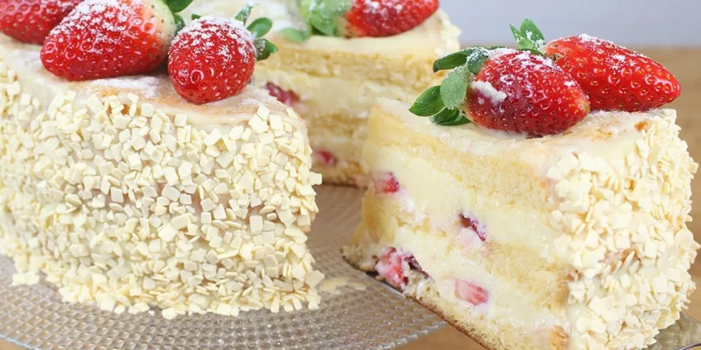
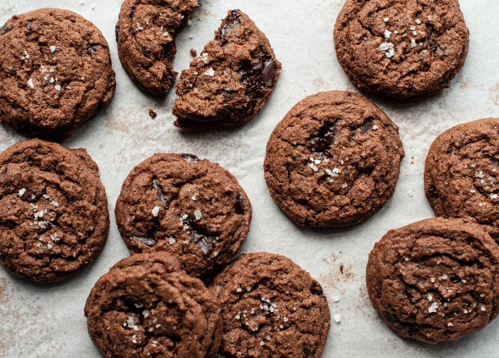
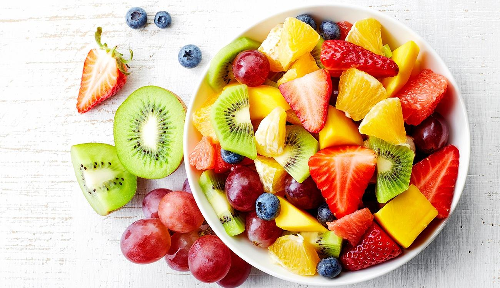

Bolo de Morango
Ingredientes
- 2 xícaras de farinha de trigo
- 1 xícara de açúcar
- 1 colher de chá de fermento em pó
- 1/2 colher de chá de bicarbonato de sódio
- Uma pitada de sal
- 1/2 xícara de manteiga derretida
- 2 ovos
- 1 colher de chá de extrato de baunilha
- 1/2 xícara de leite
- 1 xícara de morangos frescos picados
Para a cobertura
- 1 xícara de chantilly
- Morangos frescos inteiros para decorar
Modo de Preparo
- Pré-aqueça o forno a 180°C e unte uma forma de bolo.
- Misture os ingredientes secos em uma tigela grande.
- Em outra tigela, misture os ingredientes líquidos e combine com os secos até formar uma massa homogênea.
- Adicione os morangos picados à massa e misture delicadamente.
- Despeje a massa na forma preparada e asse por 30-35 minutos.
- Deixe esfriar, espalhe o chantilly e decore com morangos frescos antes de servir.
Cookies de Chocolate
Ingredientes
- 1 xícara de farinha de trigo
- 1/2 colher de chá de bicarbonato de sódio
- 1/4 colher de chá de sal
- 1/4 xícara de cacau em pó
- 1/2 xícara de manteiga sem sal, amolecida
- 1/2 xícara de açúcar mascavo
- 1/4 xícara de açúcar granulado
- 1 ovo grande
- 1 colher de chá de extrato de baunilha
- 1 xícara de gotas de chocolate meio amargo
Modo de Preparo
- Pré-aqueça o forno a 180°C e forre uma assadeira com papel manteiga.
- Misture os ingredientes secos em uma tigela.
- Bata a manteiga com os açúcares até ficar cremoso. Adicione o ovo e a baunilha.
- Combine com os ingredientes secos e misture as gotas de chocolate.
- Forme bolas de massa e asse por 10-12 minutos.
- Deixe esfriar antes de servir.
Salada de Frutas
Ingredientes
- 1 Banana
- 1 Maçã
- 1/2 Laranja
- 1 Manga
- 1 Xícara de uvas
- 1/2 Xícara de morangos
- 1 Kiwi
- Suco de 1 limão
- 2 Colheres de sopa de mel
- Folhas de hortelã e mirtilos para decorar
Modo de Preparo
- Descasque e corte todas as frutas em pedaços pequenos.
- Misture as frutas em uma tigela grande.
- Adicione o suco de limão e mel, misturando delicadamente.
- Leve à geladeira por 30 minutos e decore com hortelã antes de servir.